Design with the user
14 November 2013
1. User-centered Design, User-experience design, Co-Design
2. Lead users, Open Innovation and Open Source
1. User-centered, User-experience, Co- Design
Traditional view of design
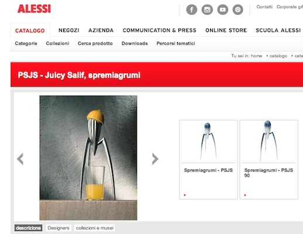Source: http://www.alessi.it/it/3/1055/accessori-da-cucina/juicy-salif-spremiagrumi
Limitations...
Any customer can have a car painted any colour that he wants so long as it is black.
Henry Ford
Approaches...
- Marketing
- Technology
- Mass-customization
- ...
- Human-centered Design
Human-centered Design
an approach to systems design and development that aims to make interactive systems more usable by focusing on the use of the system and applying human factors/ergonomics and usability knowledge and techniques
Source: ISO 9241-210
ISO 9241-210: Abstract
ISO 9241-210:2010 provides requirements and recommendations for human-centred design principles and activities throughout the life cycle of computer-based interactive systems. It is intended to be used by those managing design processes, and is concerned with ways in which both hardware and software components of interactive systems can enhance human–system interaction.
Source: ISO 9241-210
ISO 9241-210: Recommendations
- The adoption of multidisciplinary skills and perspectives
- Explicit understanding of users, tasks and environments
- User-centred evaluation driven/refined design
- Consideration of the whole user experience
- Involvement of users throughout design and development
Source: ISO 9241-210
Roots: Human-computer Interaction
Human–computer interaction (HCI) involves the study, planning, and design of the interaction between people (users) and computers. It is often regarded as the intersection of computer science, behavioral sciences, design and several other fields of study.
Source: http://en.wikipedia.org/wiki/Human%E2%80%93computer_interaction
Roots: Human-computer Interaction
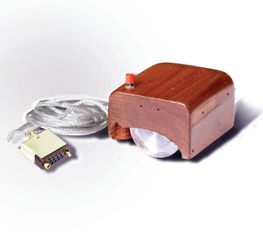... to Social Innovation
... to a Kit for NGO
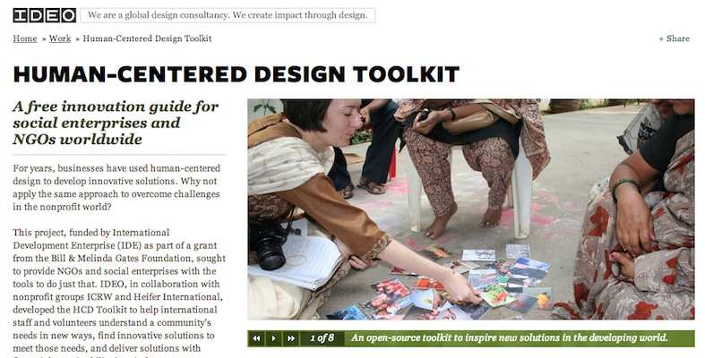Source: http://www.ideo.com/work/human-centered-design-toolkit/
... to an online platform
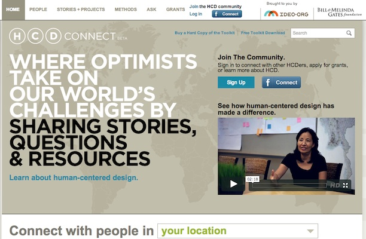Source: http://www.hcdconnect.org/
... to a no-profit initiative
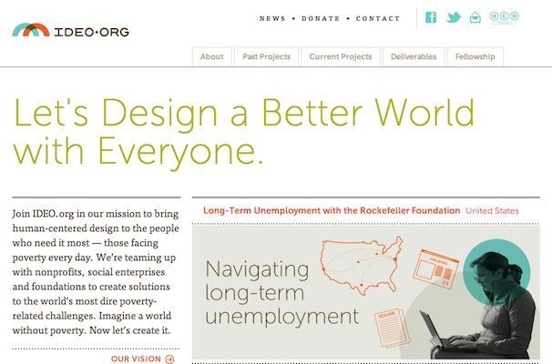Source: http://www.hcdconnect.org/
... to an online course
Source: http://vimeo.com/68659872
Roots: Participatory Design
Participatory design (known before as cooperative design) is an approach to design attempting to actively involve all stakeholders (e.g. employees, partners, customers, citizens, end users) in the design process in order to help ensure the product designed meets their needs and is usable.
User-centered Design
User-centered design (UCD) is an approach to design that grounds the process in information about the people who will use the product. UCD processes focus on users through the planning, design and development of a product.
Usability Professionals' Association
Source: http://www.usabilityprofessionals.org/usability_resources/about_usability/what_is_ucd.html
User-centered Design
basis: cognitive psychology and "Design of Everyday Things"
User-centered Design
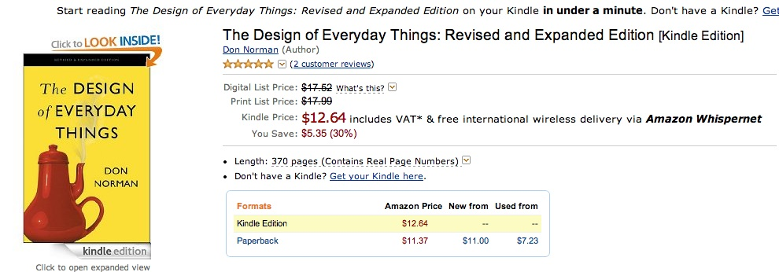Source: Norman, D. A. (2013). Design of everyday things. [S.l.]: Basic Books.
User-centered Design
principles: p. 24 - 25
User-centered Design
iterations and prototype p. 26-27
User-centered Design
Usability p. 28-29
A nice book about usability...
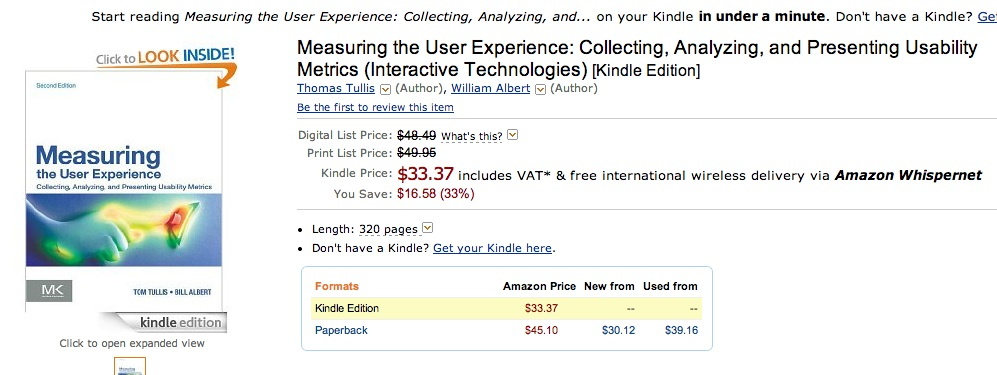Source: Tullis, T., & Albert, W. (2013). Measuring the User Experience: Collecting, Analyzing, and Presenting Usability Metrics (Interactive Technologies) (2 edition.). Morgan Kaufmann.
User-centered Design
affordance p.29-30
Personas
Scenario / Storyboard
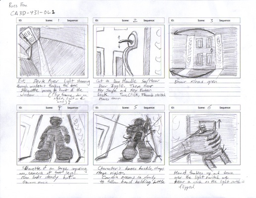... more tools: a toolkit
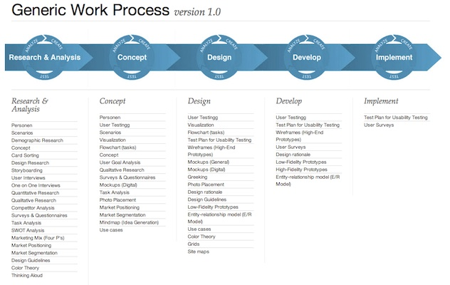User-experience Design
User-experience design p. 33
User-experience Design
Approaches p. 35
User-experience Design
grafico p. 40-41
User-experience Design
design and emotions 42-45
User-experience Design
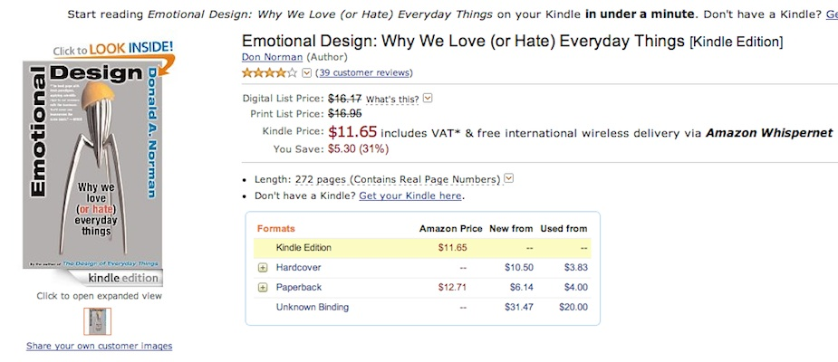Source: Norman, D. A. (2004). Emotional design why we love (or hate) everyday things. New York: Basic Books.
User-experience Design
p.49 - 50
User-experience Design
p.51-52
Co-Design
Co-design 59 - 60
Co-Design
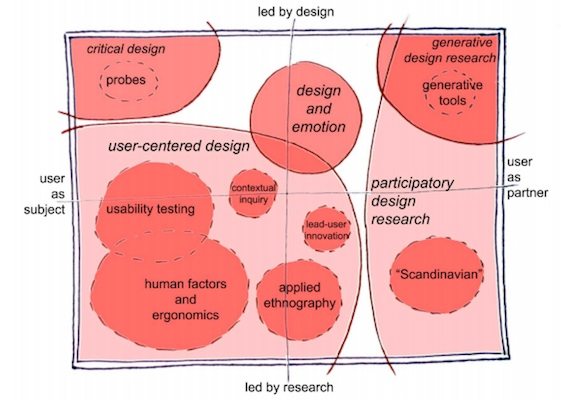Source: Sanders, E., & Stappers, P. J. (2008). Co-creation and the new landscapes of design. CoDesign, 4(1), 5–18. doi:10.1080/15710880701875068
Co-Design
64 - 65
Co-Design
Change in role of designers 68 - 71
Co-Design
tools
Co-Design
probes
Probes: a toolkit
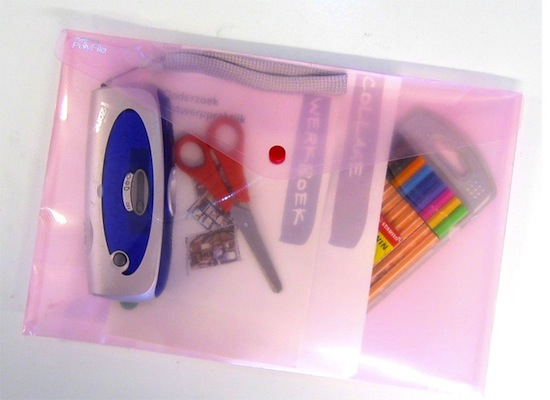Probes: to gather information
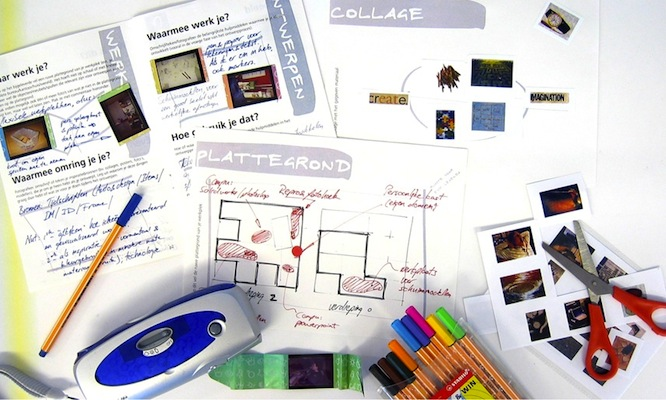Mattelmäki: "Probes"
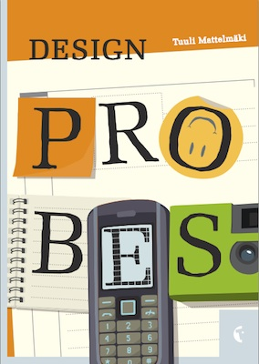Source: Mattelmäki, T. (2006). Design probes. Retrieved from https://www.taik.fi/kirjakauppa/product_info.php?products_id=28
Co-Design
prototypes grafico p. 130
Co-Design
Co-Design workshop
Co-Design
Riassumendo: grafico p.12
Lunch time! Questions?
See you at 13:00
2. Lead users, Open Innovation and Open Source
von Hippel: "The sources of innovation"
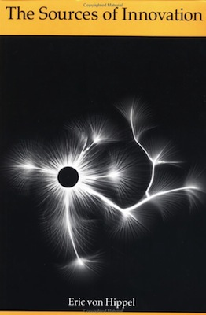Von Hippel, E. (1988). The sources of innovation. New York: Oxford University Press. Retrieved from http://web.mit.edu/evhippel/www/sources.htm
von Hippel: "Democratizing Innovation"
Source: Von Hippel, E. (2005). Democratizing innovation. Cambridge Mass.: MIT Press. Retrieved from http://web.mit.edu/evhippel/www/democ1.htm
von Hippel: Lego, User-Generated Innovation
von Hippel: Methodology for Lead Users
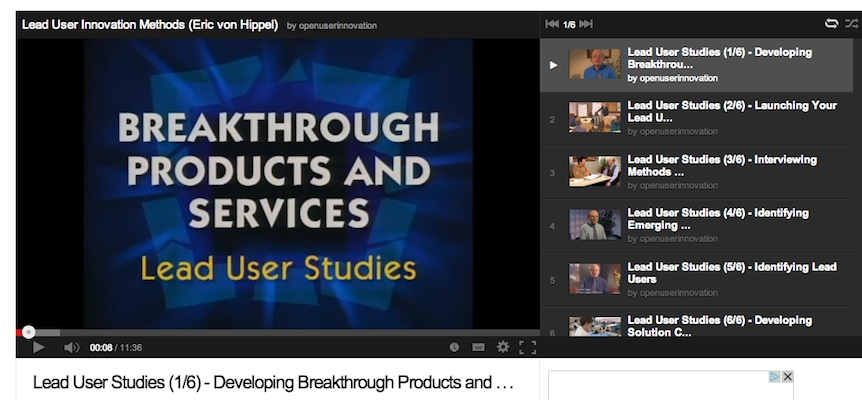Source: http://www.youtube.com/watch?v=tNKrX1QxN6U&list=PLD4C0E9AEDF085119
Lead Users: Skateboard
.jpg){kind=link}
Source: http://commons.wikimedia.org/wiki/File:Plan_B_(3598746031).jpg
Chesbrough: "Open Innovation"
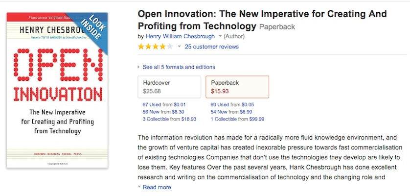Source: Chesbrough, H. W. (2003). Open Innovation: The New Imperative for Creating and Profiting from Technology. Harvard Business School Press.
Chesbrough: "Open Services Innovation"
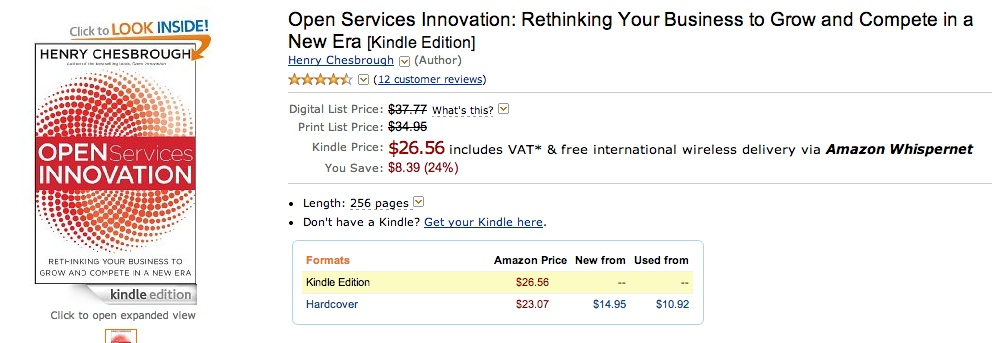Source: Chesbrough, H. (2011). Open Services Innovation: Rethinking Your Business to Grow and Compete in a New Era (1st ed.). Jossey-Bass.
Open Innovation: the concept
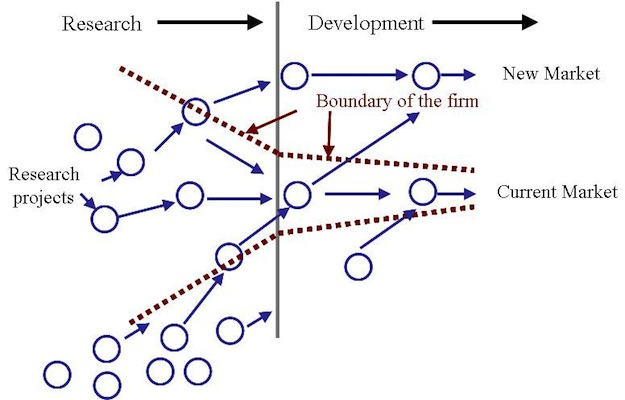Source: http://www.crowdsourcing.org/editorial/open-innovation-creating-through-community-creation/16499
Open Innovation: Innocentive
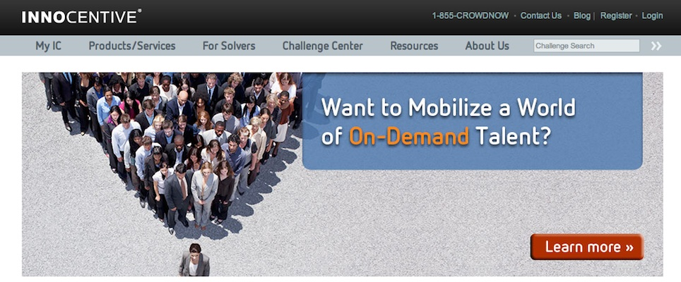Source: http://www.innocentive.com/
Open Innovation: Edra
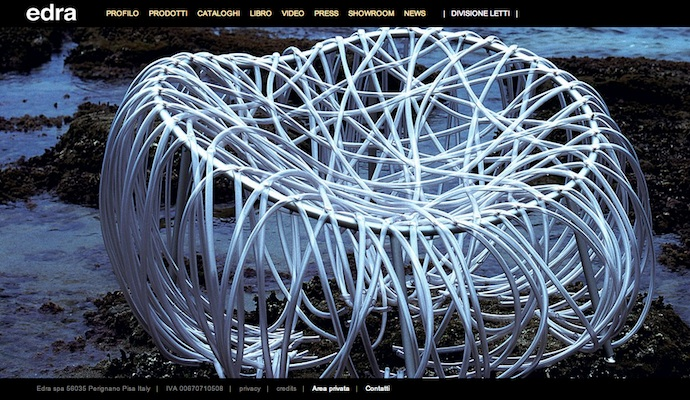Open Innovation: Santa&Cole
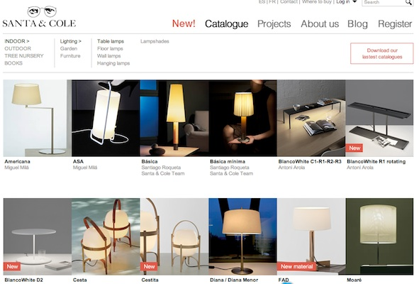Source: http://www.santacole.com/en/catalogo/lamparas-de-sobremesa
Open Innovation: Santa&Cole
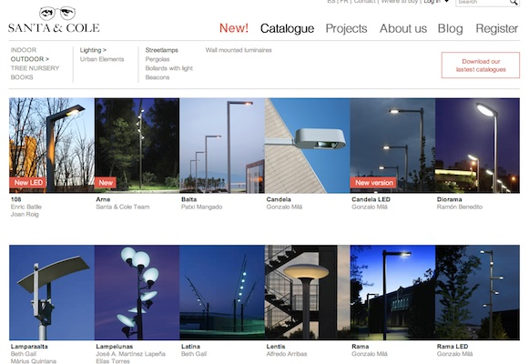Open Innovation: Santa&Cole
Open Innovation: Santa&Cole
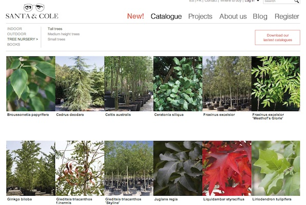Source: http://www.santacole.com/en/catalogo/arboles-de-gran-desarrollo
Open Innovation: Santa&Cole
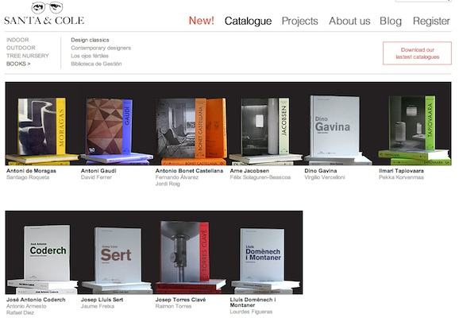Source: http://www.santacole.com/en/catalogo/clasicos-del-diseno
Open Innovation: The Physical Internet
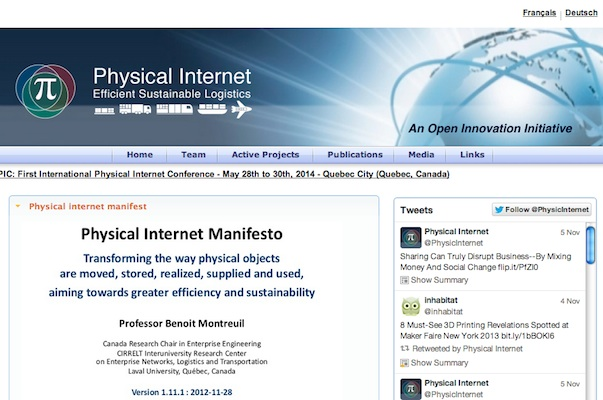Open Source: what is it?
A (software) project published with a license that facilitates its access + modifying + sharing in a collaborative way.
A (software) project developed collaboratively by a community, based not on hierarchy but on reputation.
Source: http://stallman.org/
Open Source: what is it?
Source Code (human readable)
-->
Binary Code (machine readable)
Source Code
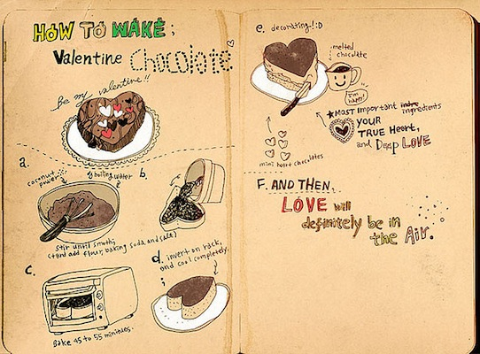Binary Code
Back to history: Mainframes
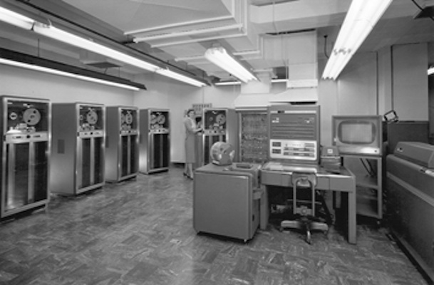Back to history: Proprietary Software
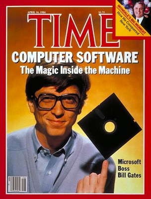Source: http://content.time.com/time/covers/0,16641,19840416,00.html
RMS Stallman
Source: http://stallman.org/
GNU: "Gnu's Not Unix"
Source: http://en.wikipedia.org/wiki/GNU
Stallman: Free Software Definition
“Free software” means software that respects users' freedom and community. Roughly, the users have the freedom to run, copy, distribute, study, change and improve the software. With these freedoms, the users (both individually and collectively) control the program and what it does for them.
RMS Stallman
Stallman: The Four Freedoms
- The freedom to run the program, for any purpose (freedom 0).
- The freedom to study how the program works, and change it so it does your computing as you wish (freedom 1). Access to the source code is a precondition for this.
- The freedom to redistribute copies so you can help your neighbor (freedom 2).
- The freedom to distribute copies of your modified versions to others (freedom 3). By doing this you can give the whole community a chance to benefit from your changes. Access to the source code is a precondition for this.
Free Software Foundation
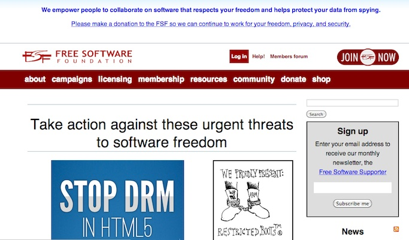Source: http://www.fsf.org/
Stallman: "Free Software Free Society"
Source: Richard Stallman. (2010). Free Software, Free Society - Selected Essays of Richard M. Stallman, 2nd Edition. GNU Press. Retrieved from http://archive.org/details/FreeSoftwareFreeSociety-SelectedEssaysOfRichardM.Stallman2nd
Linus Torvalds
GNU/Linux
GNU/Linux: how it's made
Unix
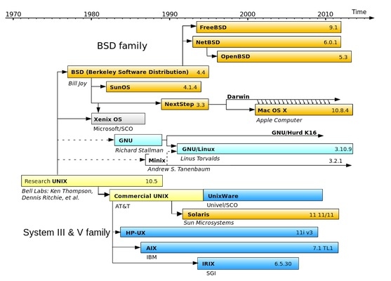{kind=link}
GNU/Linux: Ubuntu
Source: http://en.wikipedia.org/wiki/Ubuntu_(operating_system)
GNU/Linux: Ubuntu
GNU/Linux: Ubuntu
GNU/Linux: Ubuntu on Android
GNU/Linux: Ubuntu Mobile
GNU/Linux: Ubuntu for Tablets
GNU/Linux: Ubuntu TV
Raymond: "The Cathedral and the Bazaar"

Source: Raymond, E. S. (2001). The Cathedral & the Bazaar: Musings on Linux and Open Source by an Accidental Revolutionary (Revised.). O’Reilly Media. Retrieved from http://www.catb.org/~esr/writings/cathedral-bazaar/
Open Source Initiative
Source: http://opensource.org/
The Open Source Definition
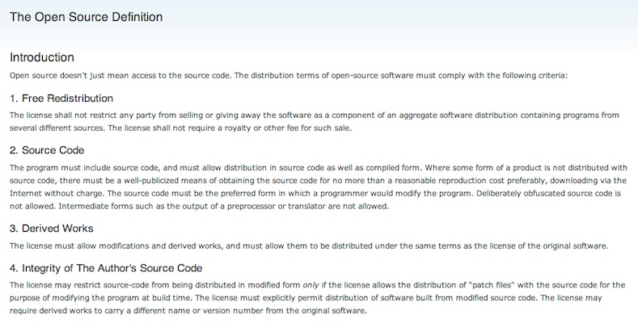Source: http://opensource.org/osd
Open Source: LAMP Stack
Source: http://opensource.org/osd
Open Source vs. Open Innovation
“Open innovation is sometimes confated with open source methodologies for software development. There are some concepts that are shared between the two, such as the idea of greater external sources of information to create value. However, open innovation explicitly incorporates the business model as the source of both value creation and value capture. This latter role of the business model enables the organization to sustain its position in the industry value chain over time. While open source shares the focus on value creation throughout an industry value chain, its proponents usually deny or downplay the importance of value capture.”
Source: Chesbrough, H. (2011). Open Services Innovation: Rethinking Your Business to Grow and Compete in a New Era (1st ed.). Jossey-Bass.
Thank you!
Massimo Menichinelli / info@openp2pdesign.org / @openp2pdesign

This work is licensed under a Creative Commons Attribution 3.0 Unported License.
Massimo Menichinelli - 2013
openp2pdesign.org